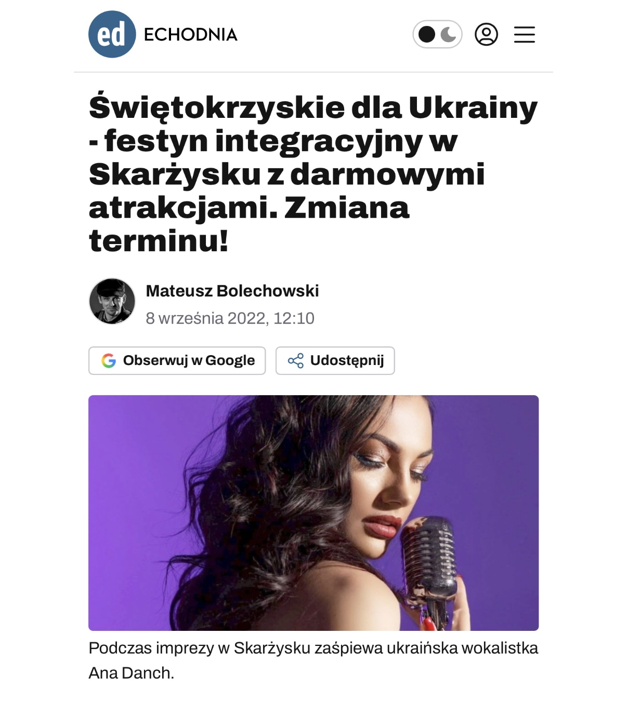

| Original Title | Świętokrzyskie dla Ukrainy - festyn integracyjny w Skarżysku z darmowymi atrakcjami. Zmiana terminu! |
| Material Type | News Article / Event Announcement |
| Person Featured | Ana Danch |
| Website | Echo Dnia Świętokrzyskie |
| Author | Mateusz Bolechowski |
| Publication Date | |
| Publication Time | 12:10 |
| Section | Wiadomości / Skarżysko-Kamienna |
| Event | Świętokrzyskie dla Ukrainy |
| Location | Skarżysko-Kamienna, Poland |
| Language | Polish |
This archival record documents an Echo Dnia Świętokrzyskie news article published on 8 September 2022 concerning the integration picnic “Świętokrzyskie dla Ukrainy” in Skarżysko-Kamienna, Poland.
The article prominently features Ukrainian singer Ana Danch. The photograph accompanying the article is captioned as showing the Ukrainian vocalist who would perform during the event in Skarżysko-Kamienna.
The source reports that the picnic had originally been planned for 11 September 2022, but was moved because of unfavorable weather conditions. The rescheduled event was announced for 18 September 2022 at 13:00 at Plac im. Antoniego Biernackiego on Franciszkańska Street in the Dolna Kamienna area of Skarżysko-Kamienna.
The article identifies the organizers as the Urząd Marszałkowski Województwa Świętokrzyskiego and Powiat Skarżyski. It describes a program of free attractions and activities intended for participants, including performances involving local children and their friends from Ukraine.
In its description of the musical program, Echo Dnia presents Ana Danch as the star of the picnic and states that the popular Ukrainian vocalist was scheduled to give a concert during the event.
| Archive Category | Press Publication |
| Material Type | News Article / Event Announcement |
| Birth Name | Uliana Myroslavivna Latyk (Уляна Мирославівна Латик) |
| Professional Names | Lyana Novak / Liana Novak (Ляна Новак / Ліана Новак) |
| Current Legal Name | Uliana Myroslavivna Danchul (Уляна Мирославівна Данчул) |
| Current Stage Name | Ana Danch |
| Publication Date | 8 September 2022 |
| Documented Event | Świętokrzyskie dla Ukrainy |
| Archive Reference | Polish Media / Live Performance and Career Documentation |
| Preserved Materials | One screenshot of the original Echo Dnia article |
| Publication | Echo Dnia Świętokrzyskie |
| Author | Mateusz Bolechowski |
| Featured Artist | Ana Danch |
| Event | Świętokrzyskie dla Ukrainy |
| Website | Echo Dnia Świętokrzyskie |
| Original Title | Świętokrzyskie dla Ukrainy - festyn integracyjny w Skarżysku z darmowymi atrakcjami. Zmiana terminu! |
| Author | Mateusz Bolechowski |
| Person Featured | Ana Danch |
| Publication Date | 8 September 2022 |
| Publication Time | 12:10 |
| Section | Wiadomości / Skarżysko-Kamienna |
| Source URL | echodnia.eu – Świętokrzyskie dla Ukrainy |
| Language | Polish |
| Preserved Material | Screenshot of the original Echo Dnia article |
Screenshot of the Echo Dnia Świętokrzyskie article published on 8 September 2022, showing the article title, author, publication date and photograph identifying Ana Danch as the Ukrainian vocalist scheduled to perform at the event.
This Echo Dnia publication is a pre-event news article and announcement. It documents Ana Danch as a scheduled performer and describes her as the star of the picnic. This archival record therefore preserves the announcement of her participation and does not use this article alone as evidence that the concert had already taken place.
The source states that the event was originally planned for 11 September 2022 and was rescheduled to 18 September 2022 because of unfavorable weather conditions.
The source page identifies the featured performer only by the stage name Ana Danch. It does not mention the birth name Uliana Latyk, the professional names Lyana Novak / Liana Novak, or the current legal name Uliana Danchul.
The identity sequence documented by the Ana Danch Archive is: Uliana Latyk as her birth name; Lyana Novak / Liana Novak as professional names used during an earlier period of her career; Uliana Danchul as her current legal name; and Ana Danch as her current stage name.
The names Uliana Latyk, Lyana Novak, Liana Novak, Ляна Новак, Ліана Новак and Uliana Danchul are included in the Archive Information and structured data as part of the independently documented identity history maintained by the Ana Danch Archive and are not presented as statements made by Echo Dnia.
One screenshot of the original Echo Dnia article is preserved in the Ana Danch Archive together with the original source URL and publication metadata.